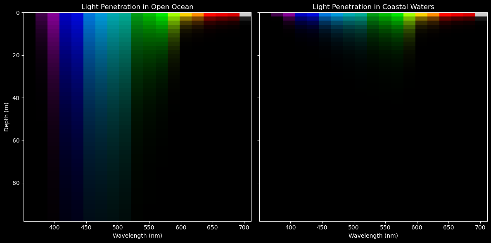

Interacting with diffuse light attenuation coefficients.
We often think of remote sensing products as largely representative of near-surface values. For the most part, this is true. With ocean color, we’re essentially looking at an integrated signal of light emerging from the ocean. The differential depths at which light disappears is a function of how turbid the water is, which, in turn, impacts how much an individual wavelength of light contributes to the remote sensing refelctance that we see from space. Let’s follow the story of a little photon of light with a bit more detail.
First, let’s call “light” out by it’s prefered terminology in this context - spectral downwelling irradiance just below the sea surface, \(E_{s}^{-}({\lambda})\), a term that represents the amount of light at each wavelength that has hit the surface of the ocean and crossed over the air-sea barrier. From here, \(E_{s}^{-}({\lambda})\) is attenuated (i.e., disappeared) exponentially with depth (\(z\)). PACE now provides the slope of this exponential decay function, known as the diffuse light attenuation coefficient, \(K_{d}({\lambda})\), for 19 individual wavelengths. Thus, at any given depth of the ocean, we can determine the spectral downwelling irradiance, \(E_{d}({\lambda},z)\), as follows:
If we are supplied a standard reference \(E_{s}^{-}({\lambda})\) spectrum, a \(K_{d}({\lambda})\) value from PACE, and a depth of our choice, we can solve for \(E_{d}({\lambda},z)\) and figure out how much and what kind of light is available at any given depth, anywhere in the ocean. In other words, a 3D product! Well, 4D I guess, if we consider latitude, longitiude, wavelengths, and depth. If this is a bit fuzzy, not to worry, we’ll illustrate this concept a bit more in the following exercises.
By the end of this tutorial, you will have:
Created a global map of the downwelling light attenuation coefficient product from PACE
Created a depth profile showing the variation of spectral downwelling irradiance
Created a spectral plot of downwelling irradiance showing the changes in light quality with depth
Created a pretty cross-section plot illustrating the difference in light penetration for two different areas
Are you ready?
A standard, run-of-the-mill rainbow
Where do bad rainbows go? (They go to Prism) They get a light sentence though, it’s only so they can have time to reflect…
…
…
Right. First thing, we need a reference spectrum. As mentioned above, this is spectral downwelling irradiance just below the sea surface, \(E_{s}^{-}({\lambda})\). If you’re interested in the details, this was calculated from the ASTM G173-03 Reference Spectra Derived from SMARTS v. 2.9.2, additionally corrected for an average sun angle for satellites, diffuse contributions, and crossing the air-sea boundary. We have saved this in a file for you.
import pandas as pd# Load the CSV filedf_es = pd.read_csv('Es_spectrum.csv')df_es
wave
Es
0
351
0.43348
1
361
0.43439
2
385
0.47793
3
413
0.92794
4
425
0.93371
5
442
1.06030
6
460
1.16610
7
475
1.18530
8
490
1.15240
9
510
1.16820
10
532
1.15060
11
555
1.14720
12
583
1.13660
13
618
1.06760
14
640
1.06230
15
655
0.96797
16
665
1.03840
17
678
1.02910
18
711
0.96479
Just in case you like to see what this looks like so it’s not some abstract concept, let’s take a quick look. This is a quantified representation of the sun’s intensity of light at different wavelengths, after passing through the atmosphere and sitting at the very tip top surface layer of ocean water. We’re getting a little fancy with the rainbow colors, but it helps illustrate the point. Refer to the commented out portion for a simpler representation.
import matplotlib.pyplot as pltfrom matplotlib.collections import PolyCollectionimport numpy as np# Normalize wavelengths for color mapping; df_es is the Es data we loaded abovenorm = plt.Normalize(df_es['wave'].min(), df_es['wave'].max())colors = plt.cm.rainbow(norm(df_es['wave'].iloc[:-1]))# Build colored polygon segmentsverts = [ [(w1, 0), (w1, e1), (w2, e2), (w2, 0)]for (w1, e1), (w2, e2) inzip(df_es[['wave', 'Es']].values[:-1], df_es[['wave', 'Es']].values[1:])]poly = PolyCollection(verts, facecolors=colors, alpha=0.5)# Plotfig, ax = plt.subplots(figsize=(7, 4))ax.add_collection(poly)ax.plot(df_es['wave'], df_es['Es'], 'k-o', label='Es') # overlay lineax.set_xlim(df_es['wave'].min(), df_es['wave'].max())ax.set_ylim(0, df_es['Es'].max() *1.1)ax.set_xlabel('Wavelength (nm)')ax.set_ylabel('Irradiance (W m$^{-2}$ nm$^{-1}$)')ax.set_title('Spectral Irradiance just beneath the sea surface (PACE wavelengths)')plt.tight_layout()plt.show()
Lock and load the PACE data
Authenticate
import earthaccessauth = earthaccess.login()# are we authenticated?ifnot auth.authenticated:# ask for credentials and persist them in a .netrc file auth.login(strategy="interactive", persist=True)
There are fancy ways of finding the “short_name” above, but if you’re not familiar with them and in a hurry, find your dataset here: https://www.earthdata.nasa.gov/data/catalog?keyword=PACE%20OCI&platforms_h[0][basis]=Space-based%20Platforms&science_keywords_h[0][topic]=Oceans
Load the data
# Create a filesetfileset = earthaccess.open(results);
# load the datasetimport xarray as xrdataset = xr.open_dataset(fileset[0])dataset
Lee, Z.P., M. Darecki, K.L. Carder, C.O.Davis, D. Stramski, W.J. Rhea, Diffuse Attenuation coefficient of downwelling irradiance: An evaluation of remote sensing methods. (2005) doi:10.1029/2004JC002573; Zhongping Lee, Chuanmin Hu, Shaoling Shang, Keping Du, Marlon Lewis, Robert Arnone, and Robert Brewin, "Penetration of UV-visible solar radiation in the global oceans: Insights from ocean color remote sensing". (2013) doi:10.1002/jgrc.20308
NASA Global Change Master Directory (GCMD) Science Keywords
data_bins :
3223664
data_minimum :
0.015999999
data_maximum :
6.0000024
We can see it has coordinates wavelength, lat and lon and variables Kd and palette.
Create a Kd map
Let’s start by choosing a single wavelength, and making a map of Kd from PACE. 490 nm is a “heritage” color band that has been used as a standard for multispectral satellite missions.
import matplotlib.pyplot as pltimport cartopy.crs as ccrsimport numpy as np# Extract and clean the Kd value at 490 nmKd_490 = dataset["Kd"].sel(wavelength=490.0, method="nearest")Kd_490_clean = Kd_490.where(Kd_490 >0)Kd_log = np.log10(Kd_490_clean)# Plot using xarray's built-in .plot() with Cartopyfig, ax = plt.subplots(figsize=(10, 5), subplot_kw={'projection': ccrs.PlateCarree()})Kd_log.plot( ax=ax, transform=ccrs.PlateCarree(), cmap='jet', vmin=-2, vmax=0, cbar_kwargs={'label': 'log₁₀(Kd) [log(1/m)]'})ax.coastlines()ax.set_title('Diffuse Attenuation Coefficient at 490 nm (log scale)')plt.tight_layout()plt.show()
Lower Kd values = lower rate of light attenuation = light goes deeper into the water
Higher Kd values = more rapid attenutation of light = light doesn’t go as deep
Pick a point, any point
This is going to do is extract the Kd data for wavelengths at a specified point on the map. Kd is a xarray Dataset and has the method “nearest” for finding values nearest to a target.
# Define target coordinates and wavelengthstarget_lat =30.0target_lon =-60.0wavelengths_target = [490.0, 555.0, 678.0]# Select nearest Kd pixelKd_pixel = Kd.sel(lat=target_lat, lon=target_lon, method="nearest")# Kd for all wavelengthsKd_pixel.values
We’re then going to choose three wavelengths, one red (678 nm), one green (555 nm), one blue-ish (490 nm). Using the reference irradiance data we imported earlier, we’re going to use those \(K_{d}({\lambda})\) terms from PACE to propagate the light (\(E_{d}({\lambda},z)\)) downward. Then we’ll see what that looks like in a profile plot.
import numpy as npimport matplotlib.pyplot as plt# Define target wavelengthswavelengths_target = [490.0, 555.0, 678.0]# Select Kd values at target wavelengthsKd_sel = Kd_pixel.sel(wavelength=wavelengths_target, method="nearest")# Match Es values from df_esEs_sel = df_es.set_index('wave').loc[[round(w) for w in Kd_sel['wavelength'].values], 'Es'].values# Create depth arraydepths = np.arange(0, 200, 2)# Compute Ed profilesEd_profiles = [E0 * np.exp(-Kd_val * depths) for E0, Kd_val inzip(Es_sel, Kd_sel.values)]# Plotcolors = ['b', 'g', 'r']labels = [f"{wl:.0f} nm"for wl in Kd_sel['wavelength'].values]plt.figure(figsize=(6, 8))for Ed, label, color inzip(Ed_profiles, labels, colors): plt.plot(Ed, depths, f'-{color}', label=label)plt.gca().invert_yaxis()plt.xlabel("Downward Irradiance, Ed (arb. units)")plt.ylabel("Depth (m)")plt.title("Vertical Profiles of Ed at Selected Wavelengths")plt.legend()plt.grid(True)plt.tight_layout()plt.show()
What we can see here is that attenuation rates are not very steep for blue light, meaning blue light goes pretty far into the water column. This is a good indicator that we’re dealing with open ocean waters. An honerable mention to green light, of course, who made it down about 75 meters before disappearing. Way to go green, we’re all rooting for you. Then there’s red. What are you doing red? Well, it turns out that even in the absence of a lot of absorbing and scattering particles, the very nature of pure water means it is going to absorb red light pretty quickly, so it left the party a bit early.
Let’s look at this another way
Since we’ve got all this cool extra information from PACE, let’s go ahead and make sure we get use out of those additional wavelengths. In the case below, we’ll look at the whole spectrum of downwelling irradiance that we’ve calculated, and examine how it changes over some nominal depth intervals.
# Plot for all wavelengths at the target lat/lonwavelengths_vals = Kd_pixel['wavelength'].valuesKd_vals = Kd_pixel.values# Match Es using rounded wavelengthsEs_vals = df_es.set_index('wave').loc[[round(w) for w in wavelengths_vals], 'Es'].values# Define depths and compute attenuated spectradepths = [1, 10, 25, 50, 100, 200]attenuated_spectra = { z: Es_vals * np.exp(-Kd_vals * z) for z in depths}# Plotplt.figure(figsize=(10, 6))plt.plot(wavelengths_vals, Es_vals, 'k--', label='Surface (Es)')for z in depths: plt.plot(wavelengths_vals, attenuated_spectra[z], label=f'Ed @ {z} m')# Extract selected lat/lon for titlelat_val =float(Kd_pixel['lat'].values)lon_val =float(Kd_pixel['lon'].values)plt.xlabel("Wavelength (nm)")plt.ylabel("Irradiance (arb. units)")plt.title(f"Spectral Downwelling Irradiance vs. Depth\nLat: {lat_val:.2f}°, Lon: {lon_val:.2f}°")plt.grid(True)plt.legend()plt.tight_layout()plt.show()
You can clearly see the anti-social red light absolutely refusing to joint its friends into the deep. As such, the deeper you go, other wavelengths of light eventually attenuatre as well, creating a dominance of blue light into the depths. This is the case for the open ocean. For funzies, feel free to go back and put in some different coordiantes, perhaps closer to the coast. A very different pattern will emerge here, as we’ll ilustrate below.
Let’s paint the town rainbow!
Let’s try a more integrated approach, so we can really see what is happening to the light with depth. We’re going to extract two points - our open ocean example we used above, and then a point near the productive waters in the Patagonian shelf upwelling system. Doing a lot of the things we did earlier in the tutorial, we’re going to restructure the data a tiny bit, so we get a higher (depth) resolution profile. In this instance, we’ll generate an \(E_{d}({\lambda},z)\) spectrum every 2 meters, over 100 meters of depth. After stacking this, we’ll plot it more like a cross-section of light, illustrating the 4D nature of the PACE \(K_{d}({\lambda})\) products.
import matplotlib.pyplot as pltimport cartopy.crs as ccrsimport cartopy.feature as cfeature# Define coordinate targetsopen_coord = {'lat': 30.0, 'lon': -60.0}coastal_coord = {'lat': -45.0, 'lon': -60.0}# Set up mapfig = plt.figure(figsize=(8, 6))ax = plt.axes(projection=ccrs.PlateCarree())# Add geographic featuresax.coastlines()ax.add_feature(cfeature.BORDERS, linestyle=':')gl = ax.gridlines(draw_labels=True)gl.top_labels = gl.right_labels =False# Set extent to cover both pointslat_min =min(open_coord['lat'], coastal_coord['lat']) -20lat_max =max(open_coord['lat'], coastal_coord['lat']) +20lon_min =min(open_coord['lon'], coastal_coord['lon']) -20lon_max =max(open_coord['lon'], coastal_coord['lon']) +30ax.set_extent([lon_min, lon_max, lat_min, lat_max], crs=ccrs.PlateCarree())# Plot pointsax.plot(open_coord['lon'], open_coord['lat'], 'ro', markersize=8, transform=ccrs.PlateCarree())ax.text(open_coord['lon'] +1, open_coord['lat'], 'Open Ocean', color='red', transform=ccrs.PlateCarree())ax.plot(coastal_coord['lon'], coastal_coord['lat'], 'bo', markersize=8, transform=ccrs.PlateCarree())ax.text(coastal_coord['lon'] +1, coastal_coord['lat'], 'Coastal', color='blue', transform=ccrs.PlateCarree())# Titleplt.title("Target Locations: Open Ocean and Coastal Waters")plt.tight_layout()plt.show()
Let’s make a plot!
from matplotlib.colors import Normalizeimport numpy as npimport matplotlib.pyplot as plt# Define coordinate targetsopen_coord = {'lat': 30.0, 'lon': -60.0}coastal_coord = {'lat': -45.0, 'lon': -60.0}# Select pixels using xarray's nearest neighbor methodKd_open = Kd.sel(**open_coord, method="nearest")Kd_coastal = Kd.sel(**coastal_coord, method="nearest")# Extract wavelengths and Kd valueswavelengths_vals = Kd_open['wavelength'].valuesKd_vals_open = Kd_open.valuesKd_vals_coastal = Kd_coastal.values# Match Es values by nearest wavelengthEs_vals = df_es.set_index('wave').loc[[round(w) for w in wavelengths_vals], 'Es'].values# Create depth arraydepths = np.arange(0, 100, 2)# Compute attenuated spectra (shape: [depth, wavelength])attenuated_spectra_open = np.array([Es_vals * np.exp(-Kd_vals_open * z) for z in depths])attenuated_spectra_coastal = np.array([Es_vals * np.exp(-Kd_vals_coastal * z) for z in depths])# Normalize for visualizationnorm = Normalize(vmin=wavelengths_vals.min(), vmax=wavelengths_vals.max())rgb_colors = plt.colormaps['nipy_spectral'](norm(wavelengths_vals))[:, :3]open_norm = attenuated_spectra_open / attenuated_spectra_open[0, :]coastal_norm = attenuated_spectra_coastal / attenuated_spectra_coastal[0, :]open_norm[open_norm <1e-3] = np.nancoastal_norm[coastal_norm <1e-3] = np.nan# Convert to RGB imagedef spectra_to_rgb(spectra, rgb_colors):return spectra[..., np.newaxis] * rgb_colors[np.newaxis, :, :]rgb_open = sptra_to_rgb(open_norm, rgb_colors)rgb_coastal = spectra_to_rgb(coastal_norm, rgb_colors)# Plotfig, axs = plt.subplots(1, 2, figsize=(12, 6), sharey=True)for ax in axs: ax.set_facecolor('black') ax.tick_params(colors='white') ax.xaxis.label.set_color('white') ax.yaxis.label.set_color('white') ax.title.set_color('white')for spine in ax.spines.values(): spine.set_edgecolor('white')fig.patch.set_facecolor('black')for ax, rgb_img, title inzip(axs, [rgb_open, rgb_coastal], ["Open Ocean", "Coastal Waters"]): ax.imshow(rgb_img, aspect='auto', extent=[wavelengths_vals.min(), wavelengths_vals.max(), depths.max(), depths.min()]) ax.set_title(f"Light Penetration in {title}") ax.set_xlabel("Wavelength (nm)")axs[0].set_ylabel("Depth (m)")plt.tight_layout()plt.show()

Notice how the blue light didn’t go down very far in the “Coastal Waters”? The reason for this is because greedy little phytoplankton are preferentially absorbing this blue light to fuel photosynthesis. We think of algae as green plants, but what we’re seeing here is that they appear inherently green to our eyes only becuase they are utilizng all the other wavelengths of light except for green! Other things can absorb blue light as well, like chromophoric dissolved organic matter and detritus, further changing the differential attenuation rates. Now, attenuation doesn’t just mean absorption of light. Light is also being scattered, perhaps multiple times. Particles can scatter light back out of the water and prevent it from going deeper, which also contributes to attenuation. Depending on the size and shape of that particle, it may be that it helps the light scatter multiple times, thereby increasing it’s chance of being absorbed on the way back up! While we’re only seeing a surface reflectance value from space, it represents a complex series of physical processes with light and the environment beneath the surface.
There you have it! Spectral light attenutation of downwelling irradiance. Now you have the ability to quantitatively characterize the subsurface light field for any depth across the entire ocean. Go PACE!
Let’s do time!
So far we have just looked at one month. Let’s look at all the months and see how light attenuation has changed over months in our coastal point. We have 13 months of data.
Lee, Z.P., M. Darecki, K.L. Carder, C.O.Davis, D. Stramski, W.J. Rhea, Diffuse Attenuation coefficient of downwelling irradiance: An evaluation of remote sensing methods. (2005) doi:10.1029/2004JC002573; Zhongping Lee, Chuanmin Hu, Shaoling Shang, Keping Du, Marlon Lewis, Robert Arnone, and Robert Brewin, "Penetration of UV-visible solar radiation in the global oceans: Insights from ocean color remote sensing". (2013) doi:10.1002/jgrc.20308
NASA Global Change Master Directory (GCMD) Science Keywords
data_bins :
3010346
data_minimum :
0.015999997
data_maximum :
6.000002
For the first plot, we will look at Ed over time at 3 wavelengths.
import matplotlib.pyplot as pltimport numpy as npimport pandas as pd# Load filedf_es = pd.read_csv('Es_spectrum.csv')df_es# Target lat/lon and wavelengthstarget_lat =-45.0target_lon =-60.0wavelengths_target = [420.0, 490.0, 555.0]depths = [1, 10]# Select Kd(time, wavelength) at pixelKd_pixel = ds_month['Kd'].sel(lat=target_lat, lon=target_lon, method="nearest")Kd_sel = Kd_pixel.sel(wavelength=wavelengths_target, method="nearest") # shape: (time, wavelength)# Match Es valuesactual_wavelengths = Kd_sel['wavelength'].valuesEs_vals = df_es.set_index('wave').loc[[round(w) for w in actual_wavelengths], 'Es'].values# Timetime_vals = pd.to_datetime(ds_month['time'].values)# Compute Ed(time, depth, wavelength)fig, axs = plt.subplots(1, 3, figsize=(15, 5), sharey=True)for i, (ax, wl, E0) inenumerate(zip(axs, actual_wavelengths, Es_vals)): Kd_wl = Kd_sel.isel(wavelength=i).values # (time,)for z in depths: Ed_time = E0 * np.exp(-Kd_wl * z) ax.plot(time_vals, Ed_time, label=f"{z} m") ax.set_title(f"{int(wl)} nm") ax.set_xlabel("Time")if i ==0: ax.set_ylabel("Ed (arb. units)") ax.grid(True) ax.legend(title="Depth", fontsize='small')# Annotatelat_val =float(Kd_sel['lat'].values)lon_val =float(Kd_sel['lon'].values)fig.suptitle(f"Spectral Irradiance Over Time\nLat: {lat_val:.2f}°, Lon: {lon_val:.2f}°", fontsize=14)plt.tight_layout(rect=[0, 0, 1, 0.95])plt.show()
For the second plot we will look at Ed at 10m for all wavelengths.|
import matplotlib.pyplot as pltimport numpy as npimport pandas as pdimport matplotlib.cm as cmimport matplotlib.colors as mcolors# load filedf_es = pd.read_csv('Es_spectrum.csv')df_es# Target coastal location and depthtarget_lat =-45.0target_lon =-60.0z =10# depth in meters# Select Kd(time, wavelength) at nearest lat/lonKd_pixel = ds_month['Kd'].sel(lat=target_lat, lon=target_lon, method="nearest")wavelengths_vals = Kd_pixel['wavelength'].valuesKd_vals = Kd_pixel.values # shape: (time, wavelength)# Match Es using rounded wavelengthsEs_vals = df_es.set_index('wave').loc[[round(w) for w in wavelengths_vals], 'Es'].values# Compute Ed at 10 mEd_10m = Es_vals * np.exp(-Kd_vals * z)# Time labelstime_labels = pd.date_range("2024-03", periods=13, freq="MS").strftime('%b %Y')# Define a colormap across time stepscmap = plt.colormaps.get_cmap('viridis')colors = [cmap(i / (len(time_labels) -1)) for i inrange(len(time_labels))]# Plotplt.figure(figsize=(10, 6))for i, (label, color) inenumerate(zip(time_labels, colors)): plt.plot(wavelengths_vals, Ed_10m[i], label=label, color=color)# Annotationslat_val =float(Kd_pixel['lat'].values)lon_val =float(Kd_pixel['lon'].values)plt.xlabel("Wavelength (nm)")plt.ylabel("Irradiance @ 10 m (arb. units)")plt.title(f"Spectral Irradiance at 10 m by Month\nLat: {lat_val:.2f}°, Lon: {lon_val:.2f}°")plt.grid(True)plt.legend(loc='upper right', ncol=2, fontsize='small', title="Month")plt.tight_layout()plt.show()